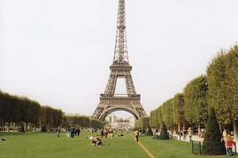
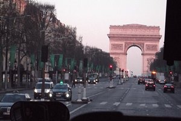
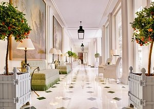
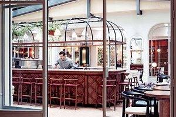
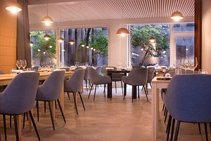
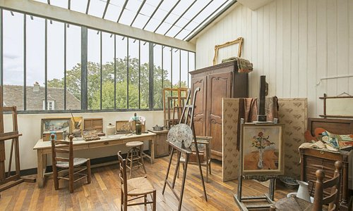

Explorer Paris

Europe > France > Île-de-France > Paris
Visiter Paris
Conseils de voyage
Tout afficher

Meilleure période pour visiter

Se déplacer

Coutumes locales

Conseils de pro
Immanquable à Paris
Se divertir
Des lieux à voir, des rues à explorer et des expériences emblématiques à Paris.

Tour Eiffel
Musée du Louvre

L'Arc de Triomphe
Musée Rodin
Librairie Shakespeare and Company
Se reposer
Un mélange de charme, de symboles et de modernité.

Le Bristol Paris
La Réserve Paris - Hotel and Spa
Four Seasons Hotel George V

Hotel des Grands Boulevards
The Hoxton, Paris
Se reposer
Bistrots et bars typiques, et plus encore à Paris.
Juveniles Wine Bar
ASPIC
Le 114 Faubourg
Frenchie

La Table de Colette
Guide des voyageurs
Par Topito
Top 10 des choses à faire ou à voir dans le 14ème
Avec : Les Catacombes de Paris, Parc Montsouris, Le Tournesol Café...
36 articles


Par Eatwith
Best summer things to do in Paris | Eatwith
Eatwith host Elodie is a private tour guide in Paris, offering all sorts of tour,including fashion or food
10 articles